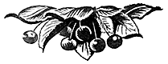

Вишня

Хозяйственное значение вишни
Вишня является одним из наиболее популярных и распространённых плодовых растений. Плоды её употребляют как в свежем, так и переработанном виде. Они обладают ценными пищевыми качествами.
Химический состав плодов можно характеризовать следующими данными (в процентах):
- Воды — 84,50
- Нерастворимых веществ — 2,08
- Растворимых — 15,19
- Сахаров — 8,66
- Кислоты — 1,80
- Азотистых веществ — 0,98
- Клетчатки — 0,27
- Золы — 0,50
- Фосфорной кислоты — 0,59
- Дубильных веществ — 0,18
Одним из ценнейших свойств вишни, имеющим большое значение в развитии плодоводства в СССР, особенно в средней и северной полосах, является исключительная её скороплодность.
Вишнёвые насаждения начинают плодоносить с 3–4-го года и уже на 6–8-й год дают нормальные урожаи. В связи с этим культура вишни должна сыграть большую роль именно сейчас, когда возникла необходимость в кратчайший срок ликвидировать ущерб, нанесённый плодоводству немецко-фашистскими захватчиками.
Весьма ценным качеством вишни является также относительная холодоустойчивость, позволяющая разводить её в более северных районах, чем, например, грушу и сливу. Она культивируется всюду, где возможна культура плодовых деревьев.
Северная граница культуры вишни в СССР проходит через Ленинград, Вологду, Киров, Молотов, Нижний Тагил.
Вишня характеризуется исключительно большим разнообразием сортимента по срокам созревания плодов. Многие сорта созревают в первых числах июня, одновременно с земляникой, а некоторые сорта — к началу сентября.
Вишня справедливо считается одним из красивейших орнаментальных растений. Поэтому она может служить для украшения парков. Красиво вишнёвое дерево ранней весной во время цветения, когда оно бывают сплошь покрыто белыми цветками. Красиво оно и летом, во время созревания плодов, когда среди тёмной зелени листвы сверкают ярко-красные плоды. Одни сорта, как, например, Идеал, характеризуются правильной шаровидной формой куста; другие, например, Кентская, развивают правильное исключительно стройное пирамидальное деревцо; третьи, например, Полжир, образуют правильную шатровидную крону, покрытую тёмной точно лаковой листвой, среди которой блестят розовые плоды. Или, например, плакучая вишня — Cer. semperflorens, которая цветёт в течение всего лета, поражая причудливостью своей формы.
История культуры вишни
Относительно времени введения вишни в культуру в литературе имеется много противоречивого. Н. И. Кичунов пишет, что косточки вишни были найдены в остатках свайных построек доисторического человека в Швейцарии, а также при раскопках стоянок первобытного человека в скандинавских странах и Америке. Однако в последних двух случаях трудно предполагать, что это были косточки вишни, так как в диком виде она не встречается ни в Америке, ни в скандинавских странах.
Первые достоверные сведения о вишне относятся к IV веку до нашей эры. Греческий писатель Теофраст, живший в это время, описывает «Церазус», произрастающую в Греции в диком виде довольно подробно. Необходимо отметить, что древние писатели под именем «Церазус», очевидно, понимали и вишню, и черешню.
Писатели первых веков нашей эры, римский писатель Плиний старший (I век), а также греческий писатель Аненей (II век) довольно подробно описывают культуру вишни и черешни. По их словам, «Церазус» была привезена в Рим полководцем Лукуллом в I веке до нашей эры. В «Естественной истории» Плиний старший пишет:
«Прежде чем Люциус Лукулл победил Митридата, в Италии не было вишен. В 680 году, по основании Рима, он, т. е. Лукулл, привёз из Понтийской области первую вишню, которая в течение менее чем в 120 лет распространилась до Британии».
Во времена Плиния культура вишни стояла уже на высоком уровне. По крайней мере, он описывает 10 сортов, которые разводились в садах Рима.
Расцвет культуры вишни в Западной Европе начинается с конца XVI века. С этого времени населением проводится большая селекционная работа, в результате которой начинают появляться новые сорта, и к началу XIX века сортимент вишен становится весьма обширным.
В России культура вишни известна со времени Киевской Руси; в северной части она появляется в первой половине XII века при Юрии Долгоруком, который с созданием Суздальского княжества завёз из Киева и вишню. В Домострое, составленном Сильвестром, в первой половине XVI века вишня рекомендуется для разведения. В XVII веке под Москвой культура вишни становится довольно заметной. В то время вишню разводили в царских поместьях и монастырях. Так, по Забелину, в царском «Просяном саду» в 1678 году было собрано 12 вёдер вишен. В 1687 году Яков Нефедьев, принимая в своё управление царское поместье Измайловское, сообщает, что там имеется 104 вишнёвых дерева. Знаменитый «Патриарший сад» во Владимире был заложен в XVI веке исключительно вишней. В XIX веке вишня становится промышленной, главным образом, крестьянской культурой в Поволжье, средней полосе Европейской России, в Курской губернии и под Москвой.
В настоящее время культура вишни продвинута на север до Вологды и на Урале до Свердловска. В Сибири культура вишни в естественной форме пока отсутствует. Там её довольно успешно разводят в стланцевой форме.
Видовой состав вишни
Вишня относится к подсемейству косточковых (Drupaceae) семейства розоцветных (Rosaсеае). Первые систематики косточковых выделяли вишни в род Cerasus, позднее её стали относить к подроду Cerasus, комплексного рода Prunus. В настоящее время, на основании более глубокого изучения рода Prunus, ботаники выделяют вишню в самостоятельный род Cerasus, подобно первым систематикам.
Из 129 видов вишни в сортообразовании играли роль только 4:
- вишня обыкновенная (Cer. vulgaris Mil.),
- вишня степная (Cer. fruticosa Pall.),
- войлочная вишня (Cer. tomentosa Thunb.),
- американская западно-песчаная вишня (Cer. besseyi Beily).
Большинство культивируемых сортов вишни происходит от двух видов — обыкновенной и степной вишни.
Вишня обыкновенная

Рис. 214. Ветка с плодами обыкновенной вишни.
Вишня обыкновенная, или кислая (Cer. vulgaris Mill.), известна с глубокой древности. В диком виде она не встречается. В одичалом состоянии её находили на Балканах и в других местах Средней Европы. Некоторые ботаники кислые вишни с неокрашенным соком называли Prunus acida, а с окрашенным соком — Prunus austera. Ботаники позднейшего времени разделяли это мнение. Линней, например, выделил 2 группы сортов и относил их к различным ботаническим видам; вишни с окрашенным соком он относил к Prunus cerasus austera и с неокрашенным соком — к Prunus cerasus caproniana. Сюда же следует отнести и Мараскинскую вишню, из плодов которой делали особый напиток «мараскин».
В прошлом ботаники полагали, что вишня происходит от черешни. Позднее, на основании цитологических исследований, возникло предположение, что она представляет собой гибрид степной вишни с черешней.
Рис. 213. Ареалы видов рода Cerasus.
1 — Cer. fruticosa; 2 — Cer. besseyi; 3 — Cer. pensylvanica; 4 — Cer. prostrata; 5 — Cer. pumila
Родиной кислой вишни ботаники считают Кавказ или Малую Азию. Однако предположение о возникновении кислой вишни в одной какой-либо географической точке нельзя считать обоснованным. По-видимому, кислая вишня могла возникнуть во многих точках, в тех местах, где ареалы степной вишни и черешни совпадают. Наличие большого количества разновидностей этой вишни на Балканах, Северном Кавказе и в Малой Азии, принимаемых часто за самостоятельные дикие формы, служит достаточным основанием для такого предположения.
Среди культурных форм, происшедших от обыкновенной вишни, принято различать две группы:
- кустовидные формы
- и древовидные.
Как правило, кустовидные вишни представляют небольшие деревца с шаровидной формой кроны и пониклыми длинными ветвями, характеризующиеся способностью к образованию корневой поросли. Отличительной особенностью этой группы вишен является недолговечность плодовой древесины и связанная с этим быстрая оголяемость скелетных частей. Плодоношение у этих форм сосредоточено, главным образом, на приросте предыдущего года; букетных веточек образуется мало. Плоды у кустовидных вишен, как правило, имеют тёмную, почти чёрную окраску. В помологической литературе вишни с тёмно-окрашенными плодами носят название морелей или гриотов.
Типичными представителями таких вишен являются сорта:
В отличие от кустовидных, древовидные вишни представляют собой деревья высотой в 6–7 м с ясно выраженным стволом и крепкими основными сучьями. Отличительной чертой этой группы вишен является смешанный характер плодоношения. Они плодоносят на букетных веточках и на однолетних побегах, причём на букетных веточках сосредоточено более половины урожая. Букетные веточки представляют плодовый побег 0,5–1 см длиною с сильно укороченными междоузлиями. На вершине букетной веточки формируется одна или две ростовые почки, а сбоку — от четырёх до десяти цветочных почек. Продолжительность жизни букетных веточек от 2 до 7 лет, но активно плодоносят только веточки 2–3-летнего возраста.
К древовидным вишням относятся сорта:
- Кентская,
- Склянка,
- Аморель козловская,
- Аморель розовая,
- Шпанка курская,
- Монморанси,
- Монморанси де-Бургель,
- Красавица из Шуази и другие, главным образом, из группы аморелей, т. е. сортов с неокрашенным соком.
Указанные две группы сортов разнятся и по другим биологическим признакам. Кустовидные вишни, как правило, являются более скороплодными, чем древовидные, и превосходят их по холодостойкости.
Рис. 215. Дерево обыкновенной вишни.
По холодостойкости сорта кислой вишни значительно уступают сортам степной вишни. Однако такие сорта кислой вишни, как Владимирская, Сайка, и другие северные сорта в зимы 1939/40 и 1941/42 гг. оказались достаточно зимостойкими. По зимостойкости они несколько превосходят или, по крайней мере, могут быть приравнены к таким среднерусским сортам яблони, как Антоновка, Коричное, Анис, Грушовка.
Кислая вишня более засухоустойчивая порода, чем, например, яблоня, груша или слива, но уступает в этом отношении абрикосу. Благодаря этой особенности вишня очень широко распространена в степных засушливых районах Украины, Донбасса, Северного Кавказа.
Степная вишня
Рис. 216. Куст степной вишни.
Степная вишня (Cer. fruticosa Pall.) известна с глубокой древности. Плиний во II веке до нашей эры, например, в своей «Естественной истории» описывает карликовую Македонскую вишню, которую многие ботаники относили к Cer. fruticosa Pall.
Степная вишня представляет собой низкорослый кустарник высотой в 20–80 см, но достигающий иногда до 1,5 м высоты, с обильной корневой порослью, образующей густые заросли.
- Побеги голые.
- Листья мелкие, ланцетовидные, тёмно-зелёные, блестящие, как будто покрыты лаком.
- Цветки белые, собраны по 2–4 в ложные зонтики.
- Окраска плодов у степной вишни очень разнообразная. Встречаются плоды от светло-розовых до тёмно-красных, почти чёрных. Форма и величина плодов точно так же очень изменчивы. Встречаются формы с плодами от реповидной до грушевидной, а по величине — от исключительно мелких форм до сравнительно крупных, с весом плодов до 3 г.
- Косточки у степной вишни очень маленькие, с острыми рёбрами. Этот признак является характерным, отличительным признаком для степной вишни.
В диком виде степная вишня растёт в средней и южной Европе. В СССР она особенно широко распространена в Поволжье и на Урале, где доходит до 56° с. ш. Переходя за Урал, она встречается в Западной Сибири. На Урале степная вишня растёт на южных склонах гор и возвышенностях, сплошными массивами по 10–20 га, образуя часто заросли площадью до 200–300 га и даже до 2000 га. Значительные массивы дикорастущей степной вишни имеются в Верхнеуральском, Брединском, Октябрьском, Усть-Уйском, Куртамышском районах, Челябинской области, а также в Курганской области. Отдельные массивы вишни — Темир-гора и Белые камни занимают площади по 150–200 га, а массив Медвежьи острова достигает 1000 га. Вишнегорский массив, занимая огромную площадь — 200000 кв. км (горы: Собачья, Борзовская, Успенская, Пожанина, Кабелиха, Еремиха и Вишнёвые), идёт по горному кряжу параллельно Каслинско-Сысертскому до 55,5° с. ш. и 60–61° в. д. и доходит до 56,50° с. ш. По свидетельству М. Н. Саламатова, в северных и горных районах Челябинской области вишня в диком виде не встречается.
Рис. 217. Заросли степной вишни на Урале.
Степная вишня имеет большое количество форм, отличающихся как по морфологическим, так и по биологическим признакам — по зимостойкости, урожайности, скороплодности и т. п. В северных районах распространения она характеризуется большой холодостойкостью, засухоустойчивостью, скороплодностью и урожайностью. По зимостойкости степная вишня очень немногим уступает лишь сибирской ягодной яблоне. В культуре она встречается в Восточной Сибири, в Красноярске и даже Иркутске, перенося морозы до 45°. Зимостойкость культурных сортов степной вишни несравненно выше сортов кислой вишни. По данным Института плодоводства им. Мичурина, наиболее стойкие сорта кислой вишни: Владимирская, Сайка, Растунья и др. — в зиму 1939/40 г. в той или иной степени подмёрзли; сорта же степной вишни и её гибриды с кислой вишней: Антоновка костычевская, Морель ранняя, Надежда Крупская, Полжир и др. — после этой зимы цвели и плодоносили. Даже в обычные зимы с морозами в 30° сорта кислой вишни часто теряют урожай вследствие подмерзания цветочных почек, а в суровые зимы 1939/40 и 1941/42 гг. у сортов этой группы подмерзали ветви.
Степная вишня является одним из самых засухоустойчивых плодовых растений. В СССР степная вишня как в диком виде, так и в культуре распространена, главным образом, в наиболее засушливых районах нашей страны: в Поволжье, Башкирии и на Урале.
Урожайность и скороплодность степной вишни необычайны. Большинство сортов её вступает в пору плодоношения на 2–3-м году.
Благодаря вышеперечисленным ценным качествам, степная вишня нашла очень широкое применение в селекции вишен на зимостойкость. И. В. Мичурин один из первых обратил внимание на этот вид.
Многие авторы (Кичунов и др.) упоминают степную вишню как подвой для вишен. Однако в этом отношении убедительных данных ещё не получено. Надо полагать, что для этой цели она будет мало пригодной, вследствие слабого роста и обильного образования корневой поросли. Зато сеянцы гибридных сортов в этом отношении дают положительные результаты. Д. Б. Шуб в Институте им. Мичурина, на основании своих пятилетних опытов, пришёл к выводу о возможности использования в качестве подвоев для вишен таких гибридных сортов, как Антоновка костычевская, Полжир и др.
Американская западно-песчаная вишня
Рис. 218. Куст американской западно-песчаной вишни.
Американская западно-песчаная вишня (Cer. besseyi Baily) представляет собой низкорослый кустарник со стелющимися ветвями, чем и отличается от близкого к ней вида Gerasus pumila — песчаной вишни.
- Побеги тонкие, длинные.
- Листья мелкие, ланцетовидные, кожистые, блестящие.
- Цветки белые, мелкие. Цветение позднее, одновременно с распусканием листьев.
- Плоды варьируют по форме, окраске и величине. Обычно плоды мелкие, не превышающие 10 г веса, зеленовато-бурой окраски, мякоть зелёная, сочная.
- Косточки крупные, удлинённые. Время созревания — конец августа.
Американская западно-песчаная вишня характеризуется исключительной скороплодностью; при семенном размножении она начинает плодоносить на 2–3-й год. Урожайность её очень высокая. За эти свои ценные биологические свойства широко была использована в селекции. Она хорошо скрещивается с японскими и американскими сливами, абрикосом, персиком и другими близкими видами. С европейскими вишнями и сливами скрещивается очень плохо. По скрещиваемости она стоит ближе к роду Prunus, чем к роду Gerasus.
Получены гибриды от скрещивания:
- с японской сливой (Pr. salicina),
- с песчаной сливой (Pr. angustifolia Watsoni),
- с американской садовой сливой (Pr. hortulana),
- с американской сливой (Pr. americana),
- с алычей (Pr. cerasifera),
- с персиком (Per. vulgaris),
- с абрикосом (Arm. vulgaris),
- с европейской сливой (Pr. domestica)
- и с китайской войлочной вишней (Cer. tomentosa).
В Советском Союзе западно-песчаная вишня разводится в Алтайском, Красноярском краях, в Бурят-Монгольской АССР, Читинской и Иркутской областях. В этой зоне она принята в стандартный сортимент. Испытывалась и в средней зоне плодоводства; как плодовое растение здесь не представляет ценности, вследствие низкого качества плодов и своеобразного вкуса их, к которому население не привыкло. Однако они могут быть с успехом использованы для технической переработки. По сообщению М. А. Лисавенко, из плодов западной песчаной вишни получается очень хорошее вино и варенье.
Рис. 219. Ветка с плодами американской западно-песчаной вишни.
Особенностью этой вишни является лёгкая размножаемость деревянистыми и зелёными черенками. В этом отношении она приближается к чёрной смородине. Западная песчаная вишня легко принимает окулировку слив, абрикосов, персиков. Но несмотря на это является плохим подвоем для этих пород, вследствие плохого срастания и недолговечности привитых деревьев. Европейские сорта вишен на ней не приживаются.
Войлочная вишня
Рис. 220. Войлочная вишня.
Войлочная вишня (Cer. tomentosa Thunb) растёт низким кустарником, высотой от 1 до 2,5 м, с многочисленными тонкими, пряморослыми ветвями, покрытыми серым войлочным опушением.
- Листья своеобразного строения с сильно выраженной нервацией и густым опушением.
- Цветки белые, сидячие, распускаются вместе с листвой.
- Плоды округлые, обычно розовые, размером до 1,3 см в диаметре, с сочной мякотью, своеобразного, без кислоты, пряного вкуса.
- Косточка маленькая, с гладкой поверхностью.
Происходит войлочная вишня из Центральной Азии. Имеет широкое распространение, начиная от Великого океана через всю Азию до Гималаев, а в отдельных местах проникает в горный Туркестан. Её местообитание приурочено к влажным местам. У нас её разводят на Дальнем Востоке. В средней полосе Советского Союза она испытывалась И. В. Мичуриным, который вывел из семян войлочной вишни сорт, названный им Аньдо.
Войлочная вишня отличается довольно большой зимостойкостью и урожайностью. Она свободно переносит морозы до 40° и является основной плодовой породой Хабаровского и Приморского краёв. Испытание войлочной вишни в восточных районах Сибири пока не дало положительных результатов, вследствие её неприспособленности к суровым условиям этих районов. В Хабаровском и Приморском краях введены в сортимент отборные номерные формы селекции Суйфуно-Уссурийской опытной станции, отличающиеся высокой урожайностью. Войлочная вишня имеет большое значение и для других районов.
Как плодовое растение войлочная вишня может быть значительно улучшена путём гибридизации с другими видами. Она сравнительно легко скрещивается с западной песчаной вишней. Имеются указания о скрещиваемости её с черешней. С нашей европейской вишней гибридов ещё не получено. Несомненно, в ближайшее время она будет улучшена настолько, что найдёт почётное место в садах средней зоны плодоводства.
Размножается войлочная вишня семенами, укоренением побегов и прививкой. Прививать при этом её следует не на вишне, а на терносливе, алыче и бессее.
Биологические особенности вишни
Особенности плодоношения вишни
В отличие от яблони, вишня плодоносит на приросте предыдущего года.
У вишни различают следующие виды почек:
- цветочные,
- ростовые,
- придаточные
- и спящие.
Цветочные почки, как правило, простые, т. е. листовые части у таких почек либо совсем отсутствуют, либо они находятся в зачаточном (недоразвитом) состоянии. После плодоношения такая почка отмирает, и веточка в этом месте оголяется. Но у некоторых сортов вишни иногда встречаются и смешанные почки, которые содержат цветочные и листовые части одновременно. Другими словами, смешанная почка может дать и плоды, и побеги. Образование смешанных почек характерно для сортов: Плодородная Мичурина, Гриот грушевидный и др., имеющих родство со степной вишней. У этих сортов цветочная кисть сидит на маленьком листоносном побеге. В течение лета в пазухах листьев цветочного побега образуются почки. Замечено, что эта способность образовывать смешанные почки более резко выражена у молодых деревьев. Однако и у старых деревьев — это обычное явление, если они находятся в хороших условиях питания. На побеге цветочные почки у вишни, как правило, занимают боковые положения.
Ростовые почки располагаются по-разному, в зависимости от условий питания дерева и сортовых особенностей. При плохих условиях питания у кустовидных вишен они бывают только на конце побегов; при хороших условиях роста они располагаются по всей длине побега вперемежку с цветочными почками. У древовидных вишен при хороших условиях питания ростовые почки закладываются по всей длине побега. Цветочные почки на сильных ростовых побегах у этой группы сортов не образуются.
Придаточные почки отличаются тем, что закладываются скрытно под корой и возникают вне зависимости от расположения листьев, на любом участке ветвей, ствола и корней, где имеется живая ткань. Характерным местом их образования у вишни являются корни. Из них развивается корневая поросль.
Спящие почки — это почки, которые почему-либо не развились и с течением времени зарастают слоем коры и древесины. Они представляют собой как бы скрытые, недоразвитые побеги внутри самого дерева. Из этих почек возникают обычно волчки. У вишни, в отличие от семечковых пород, спящие почки трудно прорастают.
У различных сортов вишен в пазухе одного листа образуется разное число почек. В связи с этим различают почки одиночные и сложные. Последние возникают в пазухах листьев побега в следующих комбинациях: листовая и плодовая; две плодовые почки с ростовой между ними; две плодовые почки; три плодовые почки.
Сложные почки характерны для сортов Владимирская, Любская. У древовидных сортов вишен (Шпанка и др.) сложных почек на однолетних побегах, как правило, не образуется.
В зависимости от соотношения ростовых и цветочных почек различаются побеги:
- ростовые,
- смешанные
- и плодовые, или цветочные.
Под ростовыми понимают побеги, на которых образуются исключительно ростовые почки. Цветочных почек на этих побегах не образуется. Число ростовых побегов у молодых деревьев относительно больше, чем у взрослых. У последних преобладают побеги смешанного или цветочного типа. Количество ростовых побегов зависит также от сортовых особенностей. У таких сортов, как Шпанка, их образуется больше чем у Любской или Владимирской.
На смешанных побегах, наряду с цветочными почками, образуются ростовые. Смешанные побеги очень характерны для сортов типа Владимирской и Любской.
Плодовые, или цветочные, побеги, в отличие от смешанных, не имеют ростовых почек, кроме одной верхушечной. Они встречаются преимущественно у таких сортов, как Владимирская и Любская. Большое количество таких побегов иногда является признаком плохого питания дерева. Образование их ведёт к оголению сучьев дерева.
У древовидных вишен плодовые побеги заменяют букетные веточки. Букетная веточка представляет собой плодовый побег 0,5–1 см длины с сильно укороченными междоузлиями. На вершине букетной веточки сидит одна или две ростовые почки, а с боков от четырёх до десяти цветочных почек. Из ростовых почек ежегодно образуется короткий прирост, на котором вновь закладываются цветочные почки.
Продолжительность жизни этих веточек бывает разная, в среднем они живут от 2 до 7 лет. Но активно плодоносят только веточки 2–3-летнего возраста.
По характеру плодоношения сорта вишни можно разделить на две основные группы:
- сорта, у которых плодоношение, в основном, сосредоточено на длинных однолетних побегах (приросте прошлого года),
- сорта, у которых плодоношение преобладает на букетных веточках.
К первой группе относятся сорта кустовидных вишен типа:
- Владимирской,
- Любской,
- Шубинки и др.
Ко второй группе — в большинстве случаев сорта древовидных вишен, например:
- Шпанка курская,
- Захаровская,
- Монморанси,
- Аморель козловская,
- Гортензия,
- Английская ранняя и др.
Соотношение между силой роста и образованием цветочных и ростовых почек
Характер плодоношения и урожайность у обеих групп сортов тесно связаны с длиной прироста.
Для получения высокого урожая надо, чтобы вишня хорошо росла и однолетние побеги были бы не менее 25–35 см длины. У кустовидных вишен слабый прирост, являющийся следствием плохой агротехники, снижает урожай не только очередного года, но и последующих лет. Наоборот, хороший рост способствует большему образованию цветочных почек и лучшему плодоношению. Что такая зависимость существует, видно из таблицы 41.
Зависимость образования цветочных ростовых почек от длины побега у некоторых сортов вишен
Из приведённых данных видно, что на коротких побегах формируются почти исключительно цветочные почки с одной или двумя ростовыми почками на конце. Побеги от 10 до 15 см являются, в основном, плодовыми; при плохой агротехнике побеги такой длины преобладают. В дальнейшем, не имея пунктов роста, цветочные почки, раз принеся плоды, отмирают, и ветвь, таким образом, оголяется. Концевые почки этих побегов дают только поступательный рост без всяких разветвлений. Дерево с короткими приростами постепенно оголяется, урожай концентрируется на концах побегов, и урожайность, вследствие уменьшения плодоносящей поверхности, резко падает.
Рис. 221. Образование цветочных почек в зависимости от длины побега у Любской (кустарниковая вишня).
На средне-сильном приросте (25–35 см) цветочных и ростовых почек бывает обычно больше, чем на коротком. Это даёт возможность в достаточной мере обеспечить нормальное плодоношение и образование новых побегов. Чрезмерно сильный рост побегов (свыше 40 см) сокращает образование цветочных почек, повышая закладку ростовых почек, а в исключительных условиях вызывается рост преждевременных побегов, называемых вторичными. Урожайность деревьев с таким сильным ростом тоже низка, как и при слабом приросте. Поэтому получение очень сильного прироста у плодоносящих деревьев не всегда желательно.
Указанная закономерность в образовании цветочных и ростовых почек в зависимости от длины побегов охватывает все сорта, плодоносящие на приросте предыдущего года (на однолетних побегах). Поскольку длина прироста является коррелятивным признаком силы плодоношения, агромероприятия должны быть направлены на получение такого прироста, который обеспечит наилучшее плодоношение в текущем году и вегетативное ветвление для получения урожаев в последующие годы. Наблюдения позволяют сделать заключение, что таким приростом для этой группы сортов вишни является длина побегов в пределах 25–35 см.
Рис. 222. Образование цветочных почек в зависимости от длины побега у древовидных вишен.
Древовидные вишни плодоносят на коротких букетных веточках и однолетних побегах. До 50% урожая у этой группы сортов сосредоточено на букетных веточках. Образование цветочных почек у них подчиняется той же закономерности, что и для сортов типа Владимирской, т. е. число цветочных почек на побеге с увеличением его длины после известного предела уменьшается (см. табл. 42).
Связь между длиной побега и образованием цветочных и ростовых почек сортов вишни Захаровская и Аморель козловская
Но у древовидных сортов вишен всё же имеется отличие в характере заложения цветочных и ростовых почек. Оно состоит в том, что на однолетних побегах относительно больше закладывается ростовых почек, чем цветочных. Побеги длиной в 30 см имеют только одни ростовые почки и ни одной цветочной. Даже самые короткие побеги (до 10 см) всегда имеют несколько ростовых почек. Практически это означает, что короткий (в 10–15 см) прирост, ведущий к увеличению процента формирования цветочных почек, способствует оголению прироста текущего года и сокращению числа букетных веточек, которые образуются из ростовых почек побега. Число ростовых почек на побеге увеличивается с длиной его, что, в свою очередь, повышает процент формирования букетных веточек.
Таким образом, образование смешанного характера плодоношения, в зависимости от длины побега, представляется в таком виде: на коротком приросте, в 10–15 см длины, имеющем 50% цветочных почек, букетных веточек образуется мало потому, что общее число ростовых почек на таком побеге очень незначительно.
С увеличением длины побега до 30–35 см цветочные почки совершенно не формируются, а образуются только ростовые почки, из которых на следующий год возникают букетные веточки с одной или двумя ростовыми и тремя-четырьмя цветочными почками.
Исключительно сильный годовой прирост побегов у древовидных сортов, вместо образования букетных веточек, ведёт к формированию сильных боковых побегов. Образование букетных веточек обеспечивает у сортов с двойным характером плодоношения, как, например, Шпанка курская, значительно большую плодоносящую поверхность, притом более долговечную, чем у сортов типа Владимирской. Букетная веточка, принося плоды, не отмирает, а сохраняет дальнейший рост из ростовой почки, возобновляясь таким образом из года в год. Период, в течение которого букетная веточка плодоносит, по нашим наблюдениям, колеблется в пределах 3–4 лет, затем она значительно теряет свою роль и уже после 7–8 лет отмирает.
Разница в характере плодоношения предопределяет необходимость применения различных агротехнических приёмов в зависимости от биологических особенностей сортов. Если к первой группе сортов (как Владимирская и Любская) для стимулирования роста можно применять только мероприятия, связанные с питанием дерева, обходясь без обрезки, то для сортов второй группы (Шпанка курская и др.), наравне с этим, применение обрезки (укорачивание) для вызова роста становится необходимым. Поэтому задачей агротехники в данный момент является разработка приёмов в соответствии с биологическими особенностями сортов.
Резюмируя сказанное, мы должны отметить, что короткий прирост (10–15 см) у обеих групп сортов ведёт к оголению ветвей дерева, уменьшению плодоносящей поверхности и снижению урожайности. Практически наилучшим приростом для плодоносящих деревьев среднего возраста будет 25–40 см. Если же средний прирост у деревьев будет меньше, то это значит, что уход за деревом неудовлетворителен.
Сравнительная характеристика сортов вишни по важнейшим производственно-биологическим признакам
Зимостойкость
Среди плодовых пород вишня считается одной из наиболее зимостойких. Самой высокой зимостойкостью отличаются сорта, происшедшие от волжско-уральских степных вишен. Сорта этой группы по зимостойкости не уступают сибирской ягодной яблоне и значительно превосходят в этом отношении сорта кислой вишни.
В Институте плодоводства им. Мичурина у мичуринских сортов, в происхождении которых принимала участие степная вишня, в зимы 1938–1942 гг. подмерзаний не наблюдалось. Особенно ценные качества у этих гибридных сортов вишни проявлялись в зиму 1938/39 г. Зимние повреждения 1938/39 г., как известно, касались, главным образом, корневой системы, причём эти повреждения были связаны с летне-осенней засухой, имевшей место в 1938 г.
Засухоустойчивые виды и сорта, могущие мириться с недостатком влаги, перезимовали эту зиму очень хорошо. В данном случае гибридные сорта степной вишни, растущие на собственных корнях, оказались биологически более приспособленными к таким условиям зимовки, чем сорта кислой вишни. Сорта Морель ранняя, Антоновка костычевская, Надежда Крупская, Полжир, Пионерка, Середнячка после зимы 1938/39 г. цвели и плодоносили. У сортов кислой вишни, растущих на собственных корнях или же привитых на сеянцах кислой вишни, в связи с сильным повреждением корневой системы, наблюдались выпады скелетных ветвей, полное опадение цветочных и боковых ростовых почек, и, при особо сильном повреждении, даже гибель дерева. К сортам, сильно пострадавшим в эту зиму, относятся: Владимирская, Сайка, Шубинка, Краса севера, Любская, растущие на собственных корнях, а также привитые на сеянцах кислой вишни. Те же сорта кислой вишни, привитые на сеянцах Антипки или степной вишни, в этот год не пострадали.
В зимы 1939/40 и 1941/42 гг. во всей средней полосе СССР свирепствовали продолжительные морозы, доходившие до 45° и даже до 50°. В этих условиях в наиболее резкой форме проявились свойства сортов и отношение их к зимостойкости.
По степени морозоустойчивости сорта вишни очень резко разделились на 3 группы.
К первой группе — наиболее зимостойких сортов — относятся сорта степной вишни и её гибриды:
- Антоновка костычевская,
- Плодородная Мичурина,
- Захаровская,
- Идеал,
- Морель ранняя,
- Кисляковка,
- Надежда Крупская,
- Полжир,
- Середнячка,
- Полевка,
- Незябкая,
- Ультраплодная и др.
В эти зимы они совершенно не пострадали и нормально плодоносили. Своей удивительной зимостойкостью эти сорта всегда вызывали у нас удивление и восхищение.
Вторую группу — среднезимостойких сортов — составляют среднерусские сорта кислой вишни:
У них в зимы 1939/40 и 1941/42 гг. наблюдалось частичное или полное вымерзание цветочных почек и подмерзание древесины. В обычные зимы эти сорта не подмерзают. К этой группе следует отнести также Гриот остгеймский и Кентскую. Последние два сорта не уступают в зимостойкости среднерусским сортам.
К третьей группе относятся сорта с пониженной зимостойкостью. Сюда входят, главным образом, сорта кислой вишни:
- Большой гобет,
- Двойная Натта,
- Короткохвостка,
- Двойная стекловидная,
- Подбельская,
- Гриот Лигеля,
- Растунья,
- Шпанка курская и др.
У сортов этой группы очень часто подмерзают цветочные почки, поэтому урожай бывает только в благоприятные годы. В суровые зимы у них сильно подмерзает крона. Так, в зиму 1939/40 г. у деревьев этой группы сортов наблюдались выпады скелетных ветвей, обрастающих веточек и даже гибель отдельных деревьев.
Чрезвычайно интересные для условий Куйбышевской области данные по зимостойкости различных сортов вишни получены Е. П. Финаевым (см. табл. 43).
Степень подмерзания сортов вишни в Куйбышевской области в зиму 1941/42 г.

Из этой таблицы видно, что наиболее зимостойким сортом оказалась Захаровская, затем Антоновка костычевская, её клоны и некоторые другие сорта, относящиеся к степным вишням (к первой группе относили деревья со слабым подмерзанием, ко второй группе — со средним, к третьей — с сильным (деревья, потерявшие большую часть кроны), к четвёртой группе относили погибшие деревья.). Сорта кислой вишни: Владимирская, Украинка, Любская — довольно сильно подмёрзли. Особенно сильно подмёрзла Растунья, которая считается в Среднем Поволжье недостаточно зимостойкой. Разную зимостойкость этих групп можно объяснить различным происхождением их. Кислые вишни, очевидно, пришли на север, в результате интродукции, из более южных областей. Они имеют более длинный вегетационный период, листопад у них затягивается до зимних морозов. Исторически сложившись в условиях сурового континентального климата, сорта степной вишни биологически лучше приспособлены к низким температурам. У сортов степной вишни рано вызревают побеги, листопад происходит задолго до морозов. Они хорошо вызревают и потому лучше переносят зимние морозы.
Сроки цветения и созревания плодов
Сортимент вишен по срокам цветения и созревания отличается большим разнообразием. Сроки цветения и сроки созревания представляют большой практический интерес. Наиболее ранними сроками цветения отличаются вишне-черешневые гибридные сорта: Май-дюк, Английская ранняя, Гортензия, Евгения. Приятным исключением из них является Краса севера, которая цветёт поздно. Основная масса сортов кислой вишни цветёт в средние сроки. Однако в этой группе сортов наблюдается очень большое разнообразие в сроках цветения. Наиболее поздними сроками цветения обладают сорта, происходящие от степной вишни.
Рис. 223. Сроки цветения различных сортов вишни.
В средней полосе СССР сорта вишни по характеру цветения можно разбить на 3 группы:
- раноцветущие,
- среднецветущие
- и поздноцветущие.
К раноцветущим сортам относятся:
К среднецветущим — большая часть сортов вишен:
- Аморель козловская,
- Растунья,
- Владимирская,
- Юбилейная,
- Шубинка.
Цветение второй группы частично совпадает, с одной стороны, с цветением раноцветущих сортов и поздноцветущих сортов (см. рис. 223) — с другой.
К поздноцветущим сортам относятся:
По созреванию сортимент вишен отличается исключительным разнообразием. Плоды вишни созревают, начиная с конца июня и кончая первой половиной сентября.
Рис. 224. Сроки созревания различных сортов вишни.
По срокам созревания сорта вишни можно разбить на 3 группы (табл. 44):
- ранние — созревающие к 1 июля,
- средние — созревающие в первые две декады июля,
- поздние — созревающие в конце июля — начале августа.
Группировка сортов вишни по срокам созревания
Нужно отметить, что в эту таблицу не вошли сорта с сверхранним и очень поздним сроком созревания. Сверхранним сроком созревания в условиях Мичуринска обладает вишня № 6 (16–20 июня). Очень поздним сортом у нас является Любская поздняя 17/41 и другие разновидности Любской, плоды которых созревают в середине сентября. Одним словом, для производства можно подобрать сорта вишен с созреванием плодов по 15 сентября.
Урожайность
Есть сорта высокоплодовитые и менее плодовитые. Возьмём для примера Любскую, способность к плодоношению у которой исключительно сильно выражена. Она начинает плодоносить со второго-третьего года исключительно обильно при самых неблагоприятных условиях. У других сортов плодовитость выражена слабее. Эти сорта очень капризны к внешним условиям, и урожайность их зависит от ухода и сочетания благоприятных условий.
Вообще урожайность сорта зависит от наследственных свойств и условий произрастания (климата, почвы и агротехники).
Вишня относится к скороспелым породам. Многие сорта её начинают плодоносить на 2–3-й год после посадки в сад. Но есть сорта и очень поздно вступающие в пору плодоношения. У скороплодных сортов типа Любской нарастание урожаев идёт очень быстро и уже с двулетних деревцов можно собрать до 4 кг плодов. У других же сортов это нарастание урожаев, наоборот, идёт крайне медленно. Поэтому к скороплодным сортам мы относим сорта, дающие на 3–4-й год жизни дерева нормальный урожай, в дальнейшем всё возрастающий. Поздно вступающие в пору плодоношения сорта вишни нормальный урожай дают обычно на 8–9–10-й год жизни.
По времени вступления в пору плодоношения сорта вишни можно распределить по группам следующим образом (табл. 45).
Группировка сортов вишни по времени вступления в пору плодоношения
Как видно из этой таблицы, по скороплодности сортимент вишни очень разнообразен. Наиболее скороплодными являются сорта степной вишни и её гибриды. Из сортов кислой вишни исключительно ранним плодоношением отличается Любская; большинство же сортов начинает плодоносить на 5–6-й год жизни дерева.
Второй важный вывод из этой же таблицы тот, что корнесобственные растения, по сравнению с привитыми, вступают в пору плодоношения позднее. Обычно привитые растения начинают плодоносить на 2–3 года раньше, чем корнесобственные. Иногда эта разница, чаще у поздноплодных сортов, достигает 5 лет.
Причина, очевидно, состоит в том, что привитые растения биологически старее, чем корнесобственные. Корневые отпрыски возникают из стадийно более молодых тканей, для прививки же берут черенки со стадийно старых деревьев. Поэтому привитые растения биологически уже приготовлены к плодоношению, в то время как корнесобственные растения ещё должны пройти какие-то возрастные изменения. Физиологическая сторона этого процесса нам ещё не ясна. У корнесобственных растений в первый период ростовые процессы преобладают. Они сильнее растут и образуют больше вегетативной массы, чем привитые. Поэтому привитые растения, начиная плодоносить раньше корнесобственных, отстают в росте от последних. Корнесобственные вишни в связи с этим обгоняют привитые в росте, образуя кроны иногда в 2 раза больше, чем привитые. Отсюда и урожайность их в дальнейшем всегда выше.
В этом направлении в Институте плодоводства им. Мичурина в 1936 г. был поставлен специальный опыт на сортах: Любская, Гриот остгеймский, Краса севера и Аморель козловская. В зимы 1939/40 и 1941/42 гг. сорта Краса севера, Аморель козловская, вследствие сильного подмерзания корневой системы и самих деревьев, из опыта выпали. Данные наблюдений приведены в таблице 46.
Плодоношение некоторых сортов вишни на подвоях и на собственных корнях
Хотя данные приводятся только для двух сортов, наши наблюдения подтверждают правильность этого вывода и по другим сортам. Во всех случаях корнесобственные деревья вишни сильнее развиты и урожайнее привитых. Больше того, если даже прививка произведена на сильнорослых подвоях, то и в этом случае привитые деревья вишни уступают в урожайности корнесобственным деревьям. Прививка, очевидно, в сильнейшей степени нарушает обмен веществ между привитой частью и корневой системой.
В литературе по плодоводству опытных данных по этому вопросу почти нет.
Между тем широкий практический опыт показал большую жизненность применения корневой поросли вишни в качестве посадочного материала. Единственно серьёзным возражением против корнесобственных вишен может служить образование корневых отпрысков, которые засоряют междурядья сада. Но они, как замечено, появляются в садах, где отсутствует обработка почвы.
По крайней мере, в коллекционных садах Института им. Мичурина при систематическом рыхлении почвы корнесобственные вишни не дают обильной поросли.
Химический состав плодов
Плоды вишни по химическому составу очень разнообразны. Исследования, проведённые в Институте плодоводства им. Мичурина, дали следующие результаты (табл. 47).
Химический состав плодов различных сортов вишни
(по данным А. Кулик, А. Франчук, Стехуна)
Количество сахаров, как видно из таблицы, колеблется от 7,3 до 13,0%. Наибольшее количество сахаров отмечено у Ширпотреб чёрной (13,015%) и наименьшее — у Шпанки курской (7,335%). Интересно отметить, что содержание сахаров не определяет ещё вкусовых достоинств сорта. Так, в группу с относительно высоким содержанием сахаров относится Идеал — очень кислый сорт. Очевидно, вкус зависит от наличия кислоты и других веществ.
Относительно высоким содержанием кислоты отличаются сорта, в происхождении которых принимала участие степная вишня:
- Идеал (2,42%),
- Надежда Крупская (2,02%),
- Полжир (2,04%),
- Полевка (1,876%),
- Плодородная Мичурина (1,725%).
Малым содержанием кислоты отличаются сорта:
- Владимирская (0,8%),
- Кентская (0,08%).
В связи с этим меняется и отношение сахаров к кислоте, что определяет сладость вкуса.
Наиболее благоприятно для вкуса отношение сахара к кислоте у сортов Владимирская (12,97) и Ширпотреб чёрная (9,0). У кислых сортов отношение сахаров к кислоте очень низкое. Например, у Идеала оно равно 4,98, а у Полжира — 4,43.
Химический состав плодов вишен, распространённых в средней полосе СССР был исследован в лаборатории проф. Церевитинова. Плоды были взяты из помологического рассадника под Москвой (см. табл. 48).
Химический состав плодов вишен, распространённых в средней полосе СССР
(исследован в лаборатории проф. Церевитинова)
Плоды из помологического рассадника под Москвой
Как видно из таблицы, Владимирская в Подмосковном районе также отличается высоким содержанием сахаров. Е. М. Петров для вишен, распространённых во Владимирской области, приводит данные по химическому составу:
Химический состав плодов вишен для сортов, распространённых во Владимирской области
(по данным Е. М. Петрова)
Химический состав плодов южного сортимента вишен был исследован Нудольской (1926 г.) в Никитском Ботаническом саду и Краснодарской плодовой опытной станцией (1936 г.). Приводим эти данные.
Химический состав плодов южного сортимента вишен
(по исследованию Нудольской в 1926 г. в Никитском Ботаническом саду и Краснодарской плодовой опытной станцией в 1936 г.)
Содержание сахаров у исследованных сортов, по сравнению с сортами средней полосы СССР, более низкое, хотя, казалось бы, на юге плоды должны быть более сахаристыми. Перечисленные в таблице сорта вишни считаются лучшими во вкусовом отношении. Несколько другие данные получила Краснодарская опытная станция.
Содержание сахаров у сортов вишни
(по данным Краснодарской опытной станции)
Десертные сорта Евгения, Английская ранняя по химическому составу характеризуются относительно большим содержанием сахаров и малым количеством кислот.
Интересные данные по химическому составу вишен для Средней Азии приводит А. Н. Бекетовский по данным Узбекской опытной станции (см. табл. 53).
Химический состав плодов вишен для Средней Азии
(А. Н. Бекетовский по данным Узбекской опытной станции)
Наибольшей сахаристостью отличается Самаркандская вишня, которая при анализе в подвяленном состоянии содержала 17,48% сахаров. Другие сорта Средней Азии, по этим данным, по сахаристости не превосходят сорта средней полосы.
Так, Владимирская имела сахаров:
- под Москвой — 12,71%,
- под Владимиром — 11,73%,
- в Мичуринске — 10,33%,
- в Краснодаре — 12,17%,
- в Самарканде — 12,38%.
Эти данные указывают, что сортовые особенности довольно стойко сохраняются, даже в других условиях произрастания.
Товарные и потребительские качества плодов
По качеству плодов сорта вишни можно распределить на 3 группы (см. табл. 52).
- десертные сорта, характеризующиеся отличными вкусовыми качествами;
- столовые сорта, характеризующиеся хорошими вкусовыми качествами;
- сорта для технической переработки.
Группировка плодов сорта вишни по потребительским качествам
Нужно отметить, что большинство сортов, относимых нами к десертным и столовым, даёт прекрасного качества сырьё для технической переработки.